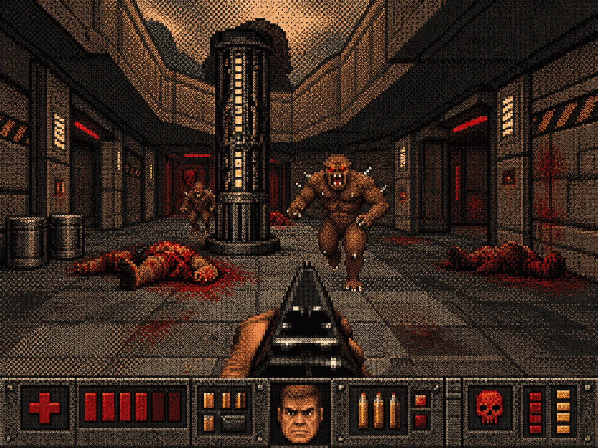

I designed and built DoomLab end to end: a harness that lets LLM agents play Doom through typed tool calls, records their decisions, compares them against baselines, and tests whether lessons from their mistakes actually improve play.
Four players take the same levels through one harness: random moves, four hand-written rules, one Qwen language-model agent, and a Qwen coordinator with Combat and Navigation specialists. Every decision is a typed, checked tool call.
In short
- Simple rules won overall. The LLM agents outlasted random in the survival tests, but the multi-agent team did not beat the single agent.
-
About one in five LLM decisions called
observeon a paused game. It could not show anything new. - A proposed improvement passed more correction cases but survived for less time on 4 of 5 validation seeds. The gate said PROMOTE. I rejected it.
- The most useful part of the project was tracing those failures back to specific decisions.
120 held-out episodes · test seeds 1000–1009, never used for
tuning.
Model qwen3.8:27b, temperature 0 · settings
locked before testing · settings ID af2ab05f5f7c.
Why Doom
I wanted a benchmark where an agent has to act, not just answer a question. Doom, through the ViZDoom research platform, gave me that, along with a few things text benchmarks could not:
- Every level comes from a seed. I can replay the exact same episode and keep a set of levels hidden until the final test.
- The game waits while the model thinks. A slow model is judged on its decisions, not on its speed.
- Each level has a plain score, like how long the player survived, so nobody has to grade a transcript by hand.
- Decisions add up. One bad habit can cost a whole episode, which is exactly what the failed improvement trial below shows.
- It is well studied and cheap. It is a common reinforcement learning testbed, and it runs on a laptop, so every result can be rerun.
The agents read facts about the screen rather than the pixels, so this measures decision making, not vision.
Four agents, the same level
This is Hold the center, on a level none of the agents saw while I was building them. The player stands in the middle of a round room and can only turn and shoot. Five monsters keep closing in from every side, one shot kills, and there are only 26 bullets, so nobody survives forever. Lasting longer means the agent kept picking the nearest threat and wasted fewer shots.
It is one level, so it shows how each agent plays rather than who wins overall.
On 10 unseen levels, simple rules still win.
These results come from 10 levels the agents never saw while I was building and tuning them. I locked the model, prompt, tools and call budgets before running those levels, so nothing here was adjusted to make the numbers look better.
- Hold the center
- The agent cannot move, only turn and shoot, while monsters close in from all sides with 26 bullets to go around. Tics survived are scored, and higher is better. A high score means it kept choosing the right target and did not waste shots. Each language-model player had the same 150-call budget.
- Find medikits
- The floor slowly drains health, medikits are scarce, and poison vials hurt. Tics survived are scored, higher is better, and surviving to the end (2,100 tics) counts as a win. A high score means it kept finding medikits and moving instead of standing still.
The table shows median scores across the held-out seeds. Below each score are the levels won out of 10 and the 95% Wilson interval for the success rate. With n = 10 per cell, those intervals are wide.
| Scenario | Random | Hand-written rules | Single agent | Multi-agent team |
|---|
The single Qwen agent survived ~3.8× as long as random on Hold the center: 1,142 vs 298.5 median tics survived (higher is better). Hand-written rules survived 1,330.5 tics. The multi-agent team did not beat the single agent. Simple rules won overall.
Hover or focus a dot to inspect its seed.
1 in 5 LLM decisions looked at a paused game
The traces made this visible. The game pauses between decisions, and every prompt already includes the current view. A separate observe action cannot show anything new, and its own description says so. The model called it anyway.
On test, 663 of 3,369 decisions (19.7%) were needless observations. On dev, measured first, it was 322 of 1,705 (18.9%). The same habit carried into unseen data.
| Test agent | Needless observe | Share | Blind shotslower is better |
|---|---|---|---|
| Single agent | 347 / 1,672 | 20.8% | 32 |
| Multi-agent team | 316 / 1,697 | 18.6% | 4 |
Episodes that ran out of LLM budget had spent about 20% of it here. Narrow roles did cut blind shots (shooting with nothing lined up) from 32 to 4 on test. That improvement still did not make the team score higher.
The lesson fixed the metric, not the game
This was the most useful failure in the project. I had an improvement process that could count mistakes, propose lessons, and test updated instructions. It produced something that looked better in individual decisions and played worse over full episodes.
I started by counting recurring mistakes in development episodes, then corrected 11 bad decisions. I reviewed all 11 corrections: I wrote two, and AI drafted the other nine. The direction of the tuning was simple: stop wasting calls on observe, walk to a medikit when health runs low, and aim before firing a single shot. An LLM used that evidence to propose three lessons for v1.
The proposed lessons, verbatim
-
__LESSONS__
Offline, v1 passed 7/11 reviewed corrected decisions, compared with 3/11 for v0 (higher is better). Across the validation episodes, observe calls fell from 41 to 3 (lower is better).
Then I compared full episodes on validation seeds 100–104. Survival fell on 4 of 5 seeds.
| Validation seed | v0 | v1 |
|---|
The agent had replaced looking with turning back and forth on the spot. Direction reversals with nothing in view rose from 1 to 17 (lower is better). A test of one decision cannot see a failure that only exists across a sequence of decisions.
How a bad action gets caught
On a held-out level the agent tried to shoot with nothing lined up. The harness refused before any button was pressed:
__REJECTION_EXAMPLE__The gate said PROMOTE. I said REJECT.
The gate promoted v1 for one extra success on seed 103. I rejected it with this note, quoted exactly:
“__HUMAN_NOTE__”
The note counted four seeds. Across all five, observe calls fell from 41 to 3.
Since then the gate has a “no broad decline” guard for future trials. The original verdict stays on record. Checks on single decisions cannot catch a failure that builds up over a whole episode.
Inside one multi-agent episode
On Hold the center, seed 1000, the multi-agent team made 24 mode choices and switched 23 times between Combat (aim and shoot) and Navigation (turn to look around). It made 24 kills and died at tic 1,413. Kills and tics survived: higher is better.
The coordinator only asks for a new assignment when the situation changes. Otherwise, the current specialist keeps going with no extra LLM call.
One issue I wrote down during development was “flickering” between roles: an enemy enters and leaves view, and control bounces between a specialist and the coordinator. I had to think about the handoff conditions as carefully as the specialist prompts. Each unnecessary handoff uses the same limited LLM budget.
I also removed a rarely used handoff action before saving the test settings. It was almost never used in the pilot, and the coordinator already covered the situations where control needed to return. The runs did not justify keeping it.
The harness, from state to score
The harness is the shared system around the game and the players. It turns the current game state into readable facts, asks for one action, checks that action, runs it, and records the result. The game is paused while a language model decides. Code, not the model, presses the buttons.

The model can choose an action, but one executor is the only code allowed to press buttons. It checks the tool, arguments, visible targets, and preconditions before acting. A rejected call comes back with a reason.
That separation let me change prompts and agent layouts while keeping the action path consistent. I turn the game’s visible labels and state into facts for the agent, then record the call, button presses, and outcome together.
The request and action loop is:
- Perceive. Game state becomes facts about enemies, items, health, ammo, and bearings.
- Decide. The agent returns one typed tool call.
- Validate & act. One executor is the only code that presses buttons. Bad calls are rejected with a reason.
- Route & recover. A state graph routes control. Three rejections in a row end the agent’s turn.
- Record. Decisions and button presses become traces that replay exactly.
- Evaluate. Dev, validation, and locked test seeds stay separate. Scores come only from traces.
- Improve. Recorded mistakes and reviewed corrections lead to proposed lessons, tests, a gate verdict, and my decision.
What I learned
Agent routing needs to earn its cost. I started with the multi-agent design, then had to inspect when control actually changed hands. The team cut blind shots, but its overall results still trailed the single agent. Removing a rarely used handoff action was part of that lesson.
The scoring rule belongs in the prompt. In a pilot episode, stating how the agent was scored and that one hit usually kills changed its burst attacks to single shots. That gave me useful feedback for the prompt. I made those changes on the pilot, then saved the run settings before the held-out test.
I needed to learn how to read a small sample. A success rate of 2/10 has a 95% Wilson interval of 6–51%. Putting that interval next to the score changed how I read the results. I kept the individual seeds visible, too, because a median can hide a lot.
A passing check only answers the question it asks. The corrected decisions tested one move at a time. They could not catch the turning pattern that emerged across a whole episode. The failed improvement trial is where that distinction became concrete for me.
What this does and doesn’t establish
- One model, three game types, and 10 test levels per comparison. The intervals are wide.
- Hold the center measures survival within the same budget of 150 LLM calls for each LLM agent. Both ran out on some levels.
- I reviewed all 11 corrections: I wrote two, and AI drafted the other nine.
- A hosted model is not fully repeatable at temperature 0. Regression cases are asked three times.
These results might change with further testing. Next I plan to try a different agent architecture and stronger models, and I think benchmarking something like JEPA would be interesting too.
Reproduce it
Re-run the evaluation with a Purdue key, then build the report:
uv run doomlab eval --split test
uv run doomlab reportEvery reported score is tied to an episode ID and a trace. The source files are here:
- GitHub repository
- Metrics report: aggregate results and success intervals
- Per-seed results: every score next to its episode ID
- Raw episode traces
- Download summary.json